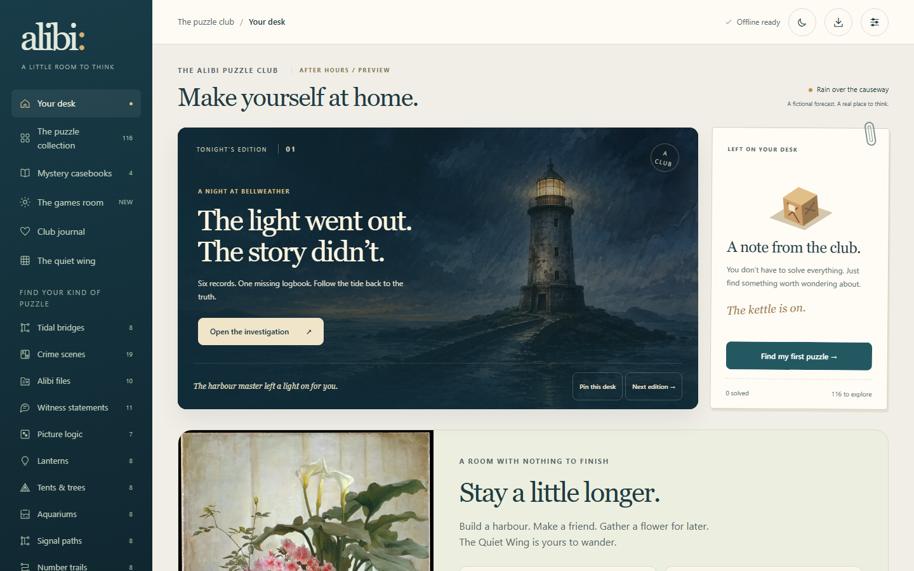
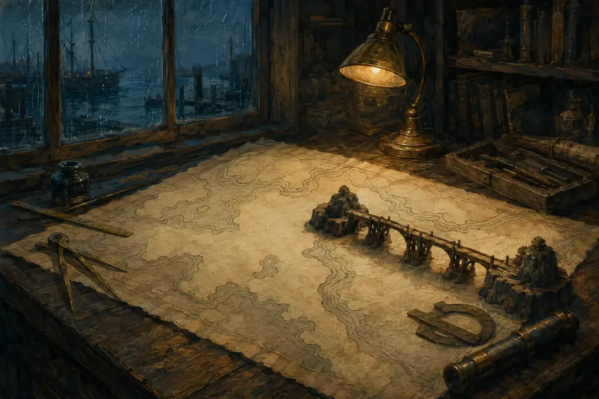
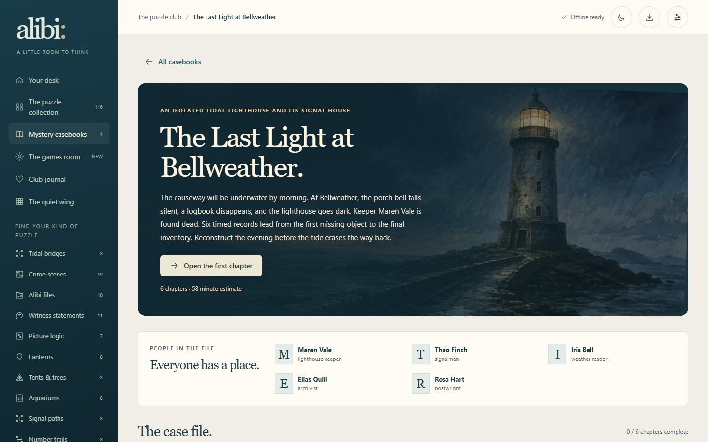
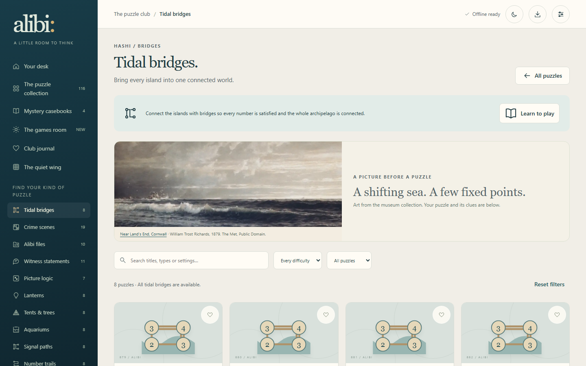
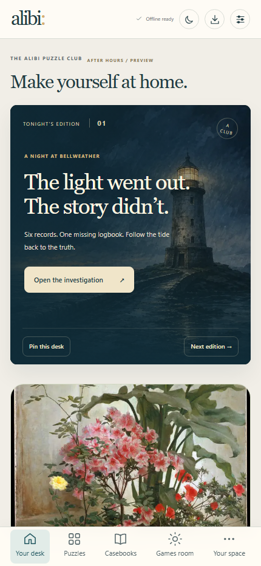

alibi:
The puzzle club · offline ready
A little room to think
The light went out.
The story didn’t.
A calm, device local puzzle club for the moments when you want to follow a thread.

Current product capture · homealibi:
A cabinet that can grow
Find your kind of puzzle
A collection
with room to wander.
116puzzles to explore
13ways to think
4casebooks to follow



The Last Light at Bellweather
Follow the
evidence.
Six timed records. One missing logbook. A lighthouse waiting to be read.
Open a file, take your time, and let the details line up.
alibi:
A picture before a puzzle
Tidal bridges
Connect a
whole world.
A few fixed points. A shifting sea. One connected archipelago.
Every family teaches a different way to look.

Current product capture · collectionalibi:
The quiet wing
Stay a little longer
Build a harbour.
Keep a friend.
Wander the town, grow a garden, meet your companions, and export the moments you want to keep.

Current product capture · mobilealibi:
A little room to think
Come in when you’re ready
Your next
small discovery.
Alibi is a quiet puzzle club for curious people and unhurried evenings.
Explore the club